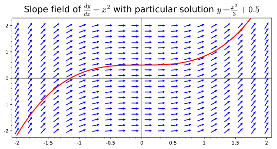

Calculus II: Futher Study of Motion and Change
Course: Math 5B — CRN 30719, Spring 2019
Time & Place: TuTh 4-6:30 (R Bulding, Room 109)
Instructor: Jorge Basilio (gbasilio@pasadena.edu)
Office: MSC R-406
Office Hours:
Numerical Integration with SageMath
Left endpoint approximation
click “Evaluate”. You can edit the code to try your own functions.
Right endpoint approximation
Midpoint approximation
Trapezoid approximation
Simpson's Rule approximation
Your calculations
References
CoCalc Website
Book: Sage for Undergraduates
-
By Gregory Bard. Download it at his website: (here)
Sage Tutorial - Online site
-
By Mike O'Sullivan. Available at his website: (here)
SageMath Advice for Calculus
-
By Tuan A. Le and Hieu D. Nguyen. Available: (here)